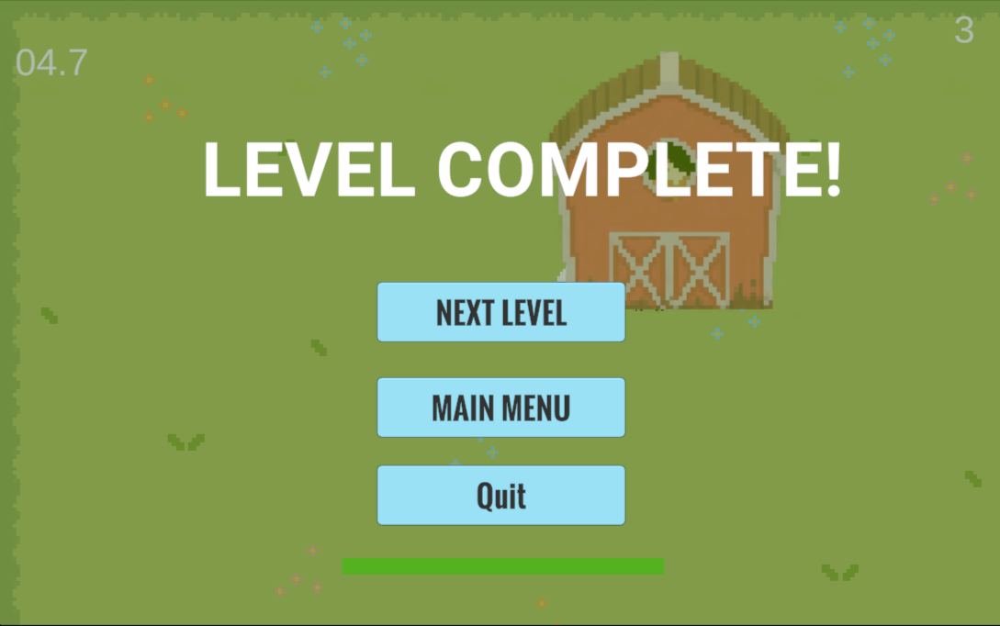
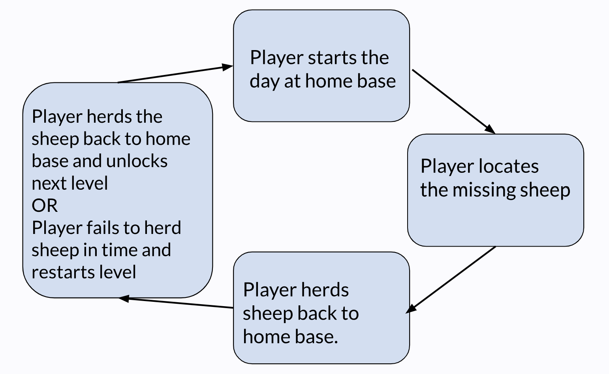
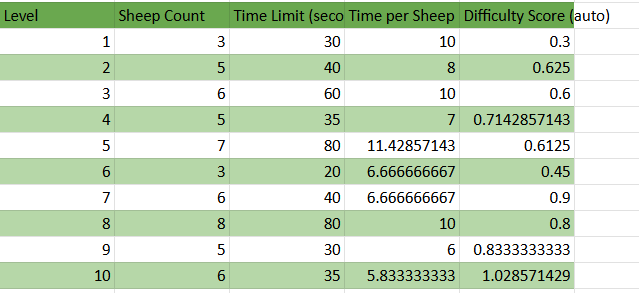
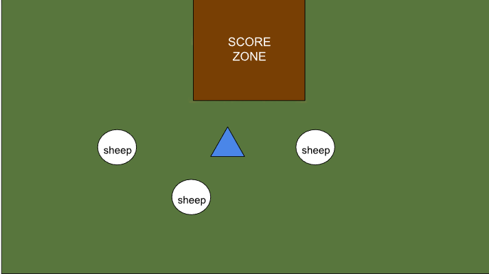
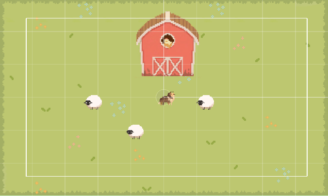
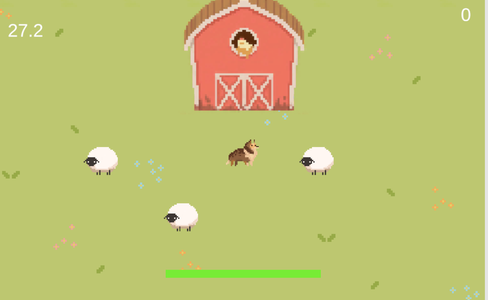
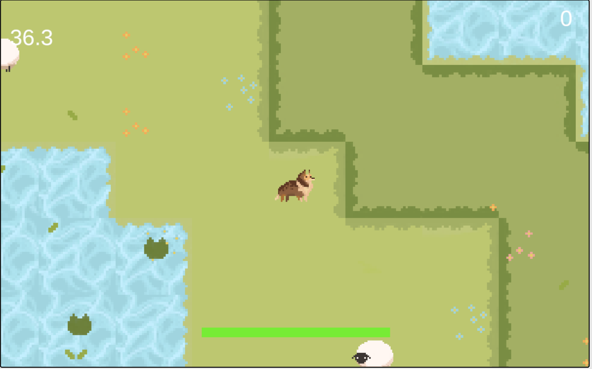

Project Overview
Shepherd is a 2D arcade-style herding game where players take control of a sheepdog and guide a flock of sheep into their pen before time runs out. Players must strategically navigate each level, using their movement and sprinting abilities to direct sheep around obstacles and overcome increasingly difficult challenges. Inspired by classic arcade games, Shepherd focuses on a simple, easy-to-understand core mechanic that becomes progressively more challenging through level design, time constraints, and environmental obstacles.
- My roles: Game Designer, Systems Designer, Game Developer, Artist
- Tools: Unity
- Timeline: 8 weeks

Core Gameplay and Design
Herding Mechanics
The central mechanic of Shepherd revolves around how sheep react to the player's proximity. When the player approaches a sheep, it runs in the opposite direction. Players must use this behavior to strategically guide the flock toward the pen.
Rather than directly controlling the sheep, players influence their movement through positioning. This creates a simple but engaging gameplay loop that encourages players to think about their approach and manage multiple moving characters simultaneously.

Movement
Players can move using WASD and hold SHIFT to sprint for a limited amount of time. Sprinting allows players to cover ground more quickly, but exhausting their stamina temporarily slows their movement.
This system introduces a resource-management element into the gameplay. Players must decide when sprinting is worth the cost, especially when working against the level's time limit.
Level Design
The game starts with relatively simple levels that introduce players to the core mechanics. As players progress, additional challenges are introduced to increase difficulty and encourage different approaches to herding.
Challenges included:
My goal was to keep the core mechanics consistent while changing the environment and level layouts to create new challenges.

Development Process
Shepherd was developed in Unity's 2D engine. One of the most important parts of developing Shepherd was using playtesting to identify areas where the game could be improved. I conducted four playtests, each focusing on a different stage of development.
Playtest 1
The first prototype focused on getting the basic herding mechanics working.
What players liked
Enjoyed the concept and core mechaincs
What could improve
Found it difficult to judge movement on the field
Design Response
- Added texture to the grass to make different areas more distinct and movement easily recognizable.

Playtest 2
I introduced a tile map to give players a more complete idea of what the game would look and feel like.
What players liked
Liked the aesthetic
What could improve
Players wanted more UI feedback and could easily leave the playable area.
Design Response
- Implemented level boundaries
- Began refining the UI

Playtest 3
Added a sheep counter, level timer, stamina bar, and level boundaries to improve player feedback.
What players liked
Appreciated the UI feedback and had a fun time learning the mechanics
What could improve
Wanted more of a challenge once they got the basic mechanics down
Design Response
- Expand level design to incorporate more challenges

Playtest 4
Expanded harder levels to have larger fields, obstacles like ponds, and stricter time limits.
What players liked
Enjoyed the variety between levels
What could improve
Would like the game to feel more 'alive'/visually responsive.
Planned Design Response
- Animate player and sheep movement
